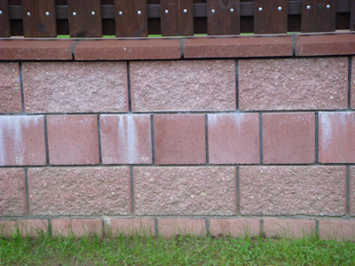

Высолы – потеря внешнего вида!
В определенных условиях, на поверхности изделий, изготовленных методом вибропрессования цементно-песчаной смеси, и конструкций из них образуются белые налеты, представляющие собой кристаллические неорганические соединения, называемые «высолами».
Они приводят к потере декоративного вида. Источниками этих высолов могут быть как материалы и технологии, применяемые при производстве изделий и конструкций, так и условия хранения изделий и особенности эксплуатации конструкций.
Во многих случаях высолы, благодаря их рыхлой структуре, могут быть счищены с поверхности каменного забора механически или исчезнуть при их растворении и смывании атмосферными осадками.
По времени возникновения на поверхности изделий и конструкций высолы подразделяются на:
первичные – образованные в процессе гидратации цемента и формирования прочности свежеизготовленных изделий и конструкций,
и вторичные – являющиеся результатом вымывания из изделий и конструкций водорастворимых солей в период их службы или хранения под воздействием атмосферных процессов.
Основными источниками первичных высолов являются:
- применяемые материалы – цемент, песок, вода, красители и т.д.;
- химические компоненты – ускорители твердения, противоморозные добавки и т.д.
Причинами появления вторичных высолов являются:
- неблагоприятные условия хранения изделий;
- химические реакции взаимодействия изделий и конструкций из них с кислотными оксидами, присутствующими в атмосфере;
- воздействие атмосферных процессов на свежеизготовленные конструкции (дождь, снег, солнце и т.д.), особенно прямое попадание мягких дождевых вод на блоки для столбов забора.
В большей части случаев появление высолов не зависит от производителя изделий при условии, что для производства используется высококачественный бездобавочный цемент и применяемые материалы не являются источниками солей.
Небольшой налет считается естественным явлением, связанным с наличием извести во всех видах цемента. Цемента без содержания извести не существует.
Интенсивность появления налета зависит от условий гидратации цемента и твердения бетона — температуры, влажности и их изменений. Если причина появления налета только в наличии извести в цементе, то это временное явление и он исчезнет по истечению 1-2 лет под воздействием атмосферных процессов.
Основными же причинами появления высолов на поверхности готовых конструкций являются:
- нарушение технологии монтажа изделий и конструкций из них;
- применение цемента низкого качества с различного рода добавками для приготовления кладочных растворов и бетонов;
- использование жидких кладочных растворов и бетонов с высоким водоцементным соотношением; отсутствие защиты свежеизготовленной конструкции от атмосферных воздействий (дождь, снег и т.д.).
Чтобы уберечь конструкции, изготовленные из вибропрессованных элементов, от появления высолов необходимо выполнять следующие рекомендации:
- соблюдать технологию выполнения строительно-монтажных работ, доверив их профессионалам;
- использовать высокомарочный цемент с низким содержанием растворимых солей, например ПЦ500-Д0;
- использовать жесткие (густые) кладочные растворы и бетоны с оптимальным водоцементным соотношением;
- не вводить в растворы и бетоны химические добавки содержащие соли;
- изолировать свежеизготовленные конструкции от атмосферных воздействий;
- обрабатывать поверхность конструкций гидрофобизирующими составами.